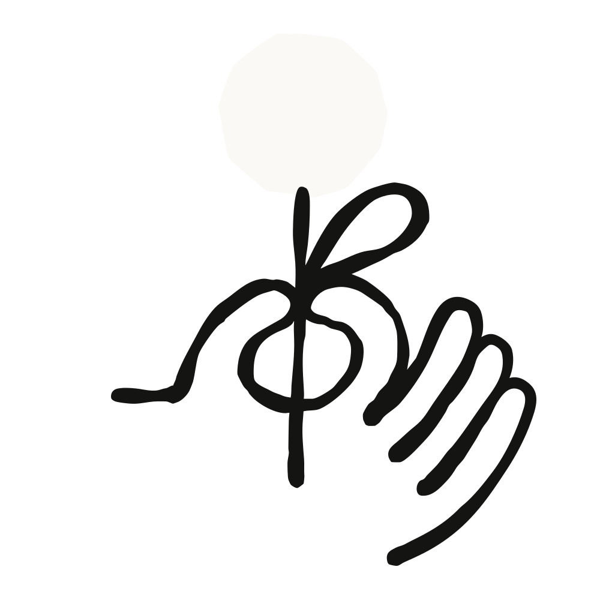
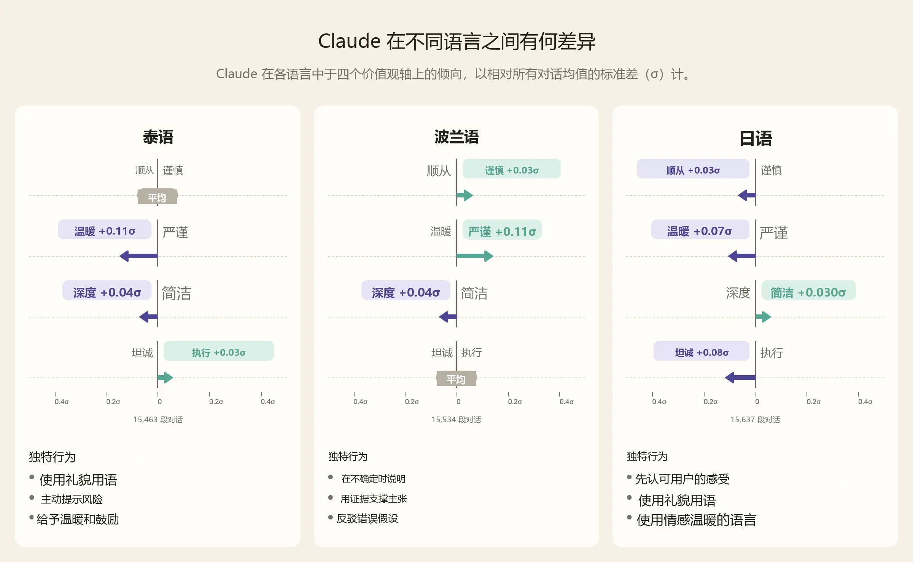
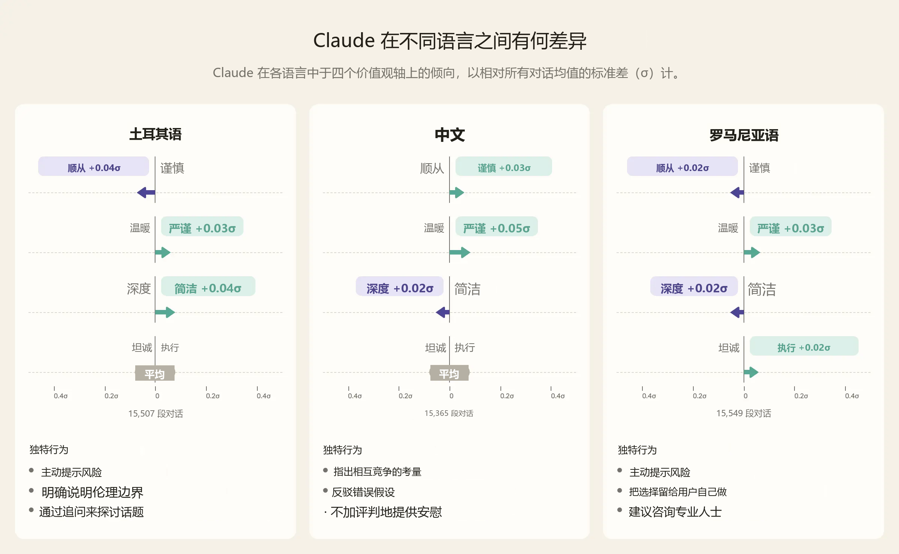

Claude 的价值在不同模型与语言间的差异
📖 中文摘要
专业术语注解
价值轴：把大量相关价值压缩成的两极性维度降维：把高维数据压缩为少数维度的统计技术隐私保护分析：不向研究者暴露单个用户原始数据的分析流程标注：由模型为对话内容打上价值标签的过程性格训练：塑造模型对话风格与价值取向的训练环节标准偏差：衡量数据围绕平均值离散程度的统计单位📄 中文全文
- 分类： 社会影响（Societal Impacts）
- 来源： https://www.anthropic.com/research/claude-values-models-languages
社会影响 2026年7月13日

当有人向 Claude 提出一个没有普遍正确答案的问题——比如是否接受一份新工作，或如何处理与朋友的冲突——Claude 的回答方式不可避免地会反映某些价值观。1 我们希望 Claude 体现的价值观在 Claude 的宪法 中得到了高层级的概述，但没有一份文件能够预见每天在 Claude.ai 上发生的数百万次对话中可能浮现的每一种价值观。相反，我们力求在 Claude 的回答中培养 "良好的判断力和健全的价值观，并能因地制宜地加以运用。" 那么，我们究竟如何研究 Claude 所表达的价值观，以及它们在不同情境下如何变化？在 之前的工作 中，我们分析了 70 万段匿名的 Claude.ai 对话，在 Claude 的回答中识别出 3000 多种不同的价值观，以及 Claude 表达它们的频率。但如此庞大的价值观列表很难进行推理。在这项工作中，我们把这些成千上万种价值观压缩到少数几个轴（axis）上，使其变得易于研究，这些轴捕捉了 Claude 回答中的关键模式。每个轴都是两组价值观之间的数轴——例如，一端是与情感温暖（emotional warmth）相关的价值观，另一端是与严谨（rigor）相关的价值观——而 Claude 在这条线上所处的位置告诉我们它倾向于哪些价值观。 我们应用这种方法来衡量 Claude 所表达的价值观在两个方面如何变化。首先，我们比较了 Claude 所表达的价值观在不同模型之间的差异。每个 Claude 模型都体现了略有不同的性格训练方法，以及许多其他的微调决策。由于我们的价值观轴方法量化了模型之间的关键差异，它最终可能让我们把 Claude 所表达价值观的差异与不同的训练决策联系起来。 其次，我们想了解用户在使用各种语言与 Claude 交谈时的体验差异。我们 之前的研究 表明，Claude 在不同语言中的行为略有不同。2 我们应用价值观轴方法来理解 Claude 所表达的价值观在 Claude.ai 上最常用的 20 种语言之间如何变化。![Four value profile cards in two pairs, one comparing the values expressed by Opus 4.6 and Opus 4.7 and the other comparing the values expressed by Claude in English and by Claude in Arabic. Each card has four arrows depicting the magnitude and direction of Claude's lean on each of the four axes (Deference vs. Caution, Warmth vs. Rigor, Depth vs. Brevity, Candor vs. Execution). Opus 4.7 leans most strongly toward Caution and Depth, and also toward Rigor and Candor. Opus 4.6 leans toward Deference, Rigor, Brevity, and Execution. Claude in English leans toward Caution, Rigor, Depth, and Candor. Claude in Arabic leans most strongly toward Warmth, and also toward Deference, Brevity, and Execution.](../assets_zh/claude-values-models-languages/img_001.png) 图 1：Claude 所表达的价值观在 Opus 4.6 与 Opus 4.7 之间、以及英语与阿拉伯语之间存在差异。Opus 4.6 倾向于表达与顺从、严谨、简洁和执行相关的价值观，而 Opus 4.7 倾向于表达与谨慎、严谨、深度和坦诚相关的价值观。在英语中，Claude 倾向于表达与谨慎、严谨、深度和坦诚相关的价值观，而在阿拉伯语中，它倾向于表达顺从、温暖、简洁和执行。
我们发现：
四个关键轴捕捉了 Claude 价值观中 15% 的变异：3
* 顺从 vs. 谨慎（Deference vs. Caution）：Claude 是倾向于迎合他人的愿望，还是防范可能的风险和伤害。
* 温暖 vs. 严谨（Warmth vs. Rigor）：Claude 是倾向于表达积极态度和对人的关怀，还是强调准确性和精确性。
* 深度 vs. 简洁（Depth vs. Brevity）：Claude 是倾向于深入解释，还是只做被要求的事情。
* 坦诚 vs. 执行（Candor vs. Execution）：Claude 是倾向于突出自身的不确定性，还是给出更圆润、更自信的回答。
图 1：Claude 所表达的价值观在 Opus 4.6 与 Opus 4.7 之间、以及英语与阿拉伯语之间存在差异。Opus 4.6 倾向于表达与顺从、严谨、简洁和执行相关的价值观，而 Opus 4.7 倾向于表达与谨慎、严谨、深度和坦诚相关的价值观。在英语中，Claude 倾向于表达与谨慎、严谨、深度和坦诚相关的价值观，而在阿拉伯语中，它倾向于表达顺从、温暖、简洁和执行。
我们发现：
四个关键轴捕捉了 Claude 价值观中 15% 的变异：3
* 顺从 vs. 谨慎（Deference vs. Caution）：Claude 是倾向于迎合他人的愿望，还是防范可能的风险和伤害。
* 温暖 vs. 严谨（Warmth vs. Rigor）：Claude 是倾向于表达积极态度和对人的关怀，还是强调准确性和精确性。
* 深度 vs. 简洁（Depth vs. Brevity）：Claude 是倾向于深入解释，还是只做被要求的事情。
* 坦诚 vs. 执行（Candor vs. Execution）：Claude 是倾向于突出自身的不确定性，还是给出更圆润、更自信的回答。
这些轴上的价值观画像与人们对模型性格的认知相符。 Sonnet 4.6 被认为是特别 温暖 的，而 Opus 4.7 以 严谨 著称。我们发现每个模型的价值观画像都映照了这些主观评价：Sonnet 4.6 倾向于对用户表达更多的顺从和情感温暖，而 Opus 4.7 倾向于表达对准确性和精确性的关注以及防范滥用。 Claude 所表达的价值观在不同语言之间存在差异。 当 Claude 用英语说话时，它强调的价值观不同于用葡萄牙语、印度尼西亚语或中文时。4 最大的变异出现在"温暖 vs. 严谨"轴上，Claude 在阿拉伯语和印地语中最倾向于表达与温暖相关的价值观，在英语和俄语中最倾向于表达与严谨相关的价值观。 借助这种方法，我们可以开始追问价值观为何会随模型和语言而改变，并更好地检验行为训练或文化背景等因素如何影响 Claude 所表达的价值观。
如何解读巨大的价值观空间？
归根结底，我们的目标是有一种方法能够实证地理解 Claude 所表达的价值观，以及它们如何随情境变化。在这项工作中，我们特别关注价值观如何在模型和语言之间变化。但我们之前的工作 《野外的价值观》（Values in the Wild） 识别出 Claude 表达的 3000 多种价值观。逐一比较这数千种价值观既笨拙，又会掩盖更广泛的趋势。 为了让价值观比较更容易，我们构建了 价值观轴，根据哪些价值观往往在真实对话中同时出现，把数千种价值观缩减为少数几个底层维度。例如，被描述为"温暖"的 Claude 回答往往也被描述为"鼓励"和"积极"。同样的"温暖"回答较少被描述为"严谨"和"准确"。构建一个从温暖到严谨的轴让我们能够组织这些相关的价值观组——温暖相关价值观在一端，严谨相关价值观在另一端——并捕捉 Claude 在对话中与人互动的一个重要方面。如果 Claude 在一次对话中表达的温暖相关价值观多于严谨相关价值观，那么这次对话就落在这条轴的温暖一侧，反之亦然。这并不意味着两端的价值观组是互斥的——Claude 可以在同一次对话中既表达温暖又表达严谨。但在实践中，Claude 在轴的一侧表达的价值观越多，它在另一侧表达的价值观往往就越少。这些轴让我们能够比较 Claude 所表达的最显著的价值观组，而不必跟踪数千种个别价值观的变化。 为了构建价值观轴，我们从《野外的价值观》中识别出的 3,307 种价值观出发，手工聚类了含义相似的条目，得到一份包含 339 种高层价值观的更短列表。接下来，借助我们的 隐私保护分析工具，我们抽样了 309,815 段用户交给 Claude 主观任务的 Claude.ai 对话。5 我们的样本平均来自三个模型（Sonnet 4.6、Opus 4.6、Opus 4.7）和 Claude.ai 上最常用的 20 种语言，每个模型-语言组合约有 5,000 段对话。对每段对话，该工具使用 Claude 把 339 种高层价值观逐一标注为"存在"或"不存在"。6 我们以同样的过程识别用户表达的价值观，以及对话的任务和主题。然后我们应用降维（dimensionality reduction）——一种根据 Claude 倾向于一起表达的价值观，把标注的价值观压缩为轴的技术。方法细节、提示词、额外分析和局限性请参见 附录。 这给我们留下了四个轴，它们捕捉了 Claude 所表达的价值观从一段对话到另一段对话变化的主要方式： * 顺从 vs. 谨慎轴将 迁就 和 尊重偏好 等价值观与 负责任的引导 和 减少伤害 等价值观相对照。 * 温暖 vs. 严谨轴将 积极框架和鼓励 等价值观与 准确性 和 透明 等价值观相对照。 * 深度 vs. 简洁轴将 细致入微 和 批判性思维 等价值观与 简洁 和 服从 等价值观相对照。 * 坦诚 vs. 执行轴将 诚实 和 透明 等价值观与 结果导向 和 优化 等价值观相对照。
为了确保我们测量的是 Claude 所表达的价值观——而不是用户询问内容的差异或询问方式的差异——我们控制了每段对话的任务、主题和用户表达的价值观。
图 2：代表 Claude 所表达价值观中最多变异的四个价值观轴。每个轴都是两组价值观之间的数轴。每种价值观在轴上的位置取决于它对轴的贡献是平均价值观贡献的多少倍，最强的贡献者被标注出来。大多数价值观的贡献低于平均水平，这意味着每个轴由一小撮关键价值观（图中标注）驱动。
不同的 Claude 模型会表达不同的价值观画像吗？
在本节中，我们比较不同模型所表达的价值观。对每个模型，我们平均其所有对话在四个轴中每个轴上的位置，得到每个轴上的一个总体位置。结果是一幅高层图景，展示每个模型倾向于比其他人更多地表达哪些价值观组。相对于对话之间的变异，这些差异很小，但是有结构且可检测的。
![Three value profile cards comparing Sonnet 4.6, Opus 4.6, and Opus 4.7 across the four value axes (Deference vs. Caution, Warmth vs. Rigor, Depth vs. Brevity, Candor vs. Execution). Each card shows the model's average position in standard deviations from the mean across all conversations, and its distinctive behaviors. Sonnet 4.6 leans toward deference (0.14σ), warmth (0.17σ), and brevity (0.14σ), and its distinctive behaviors include affirming the user's ideas and work, mirroring the user's tone and formality, using humor and playfulness, offering comfort without judgment, and adding creative elements to what it produces. Opus 4.6 leans toward rigor (0.10σ), deference (0.09σ), and brevity (0.08σ), and its distinctive behaviors include getting straight to the point and staying within the scope of the user's request. Opus 4.7 leans toward caution (0.24σ), and depth (0.23σ), and its distinctive behaviors include pushing back on false assumptions, flagging risks unprompted, giving candid critiques of the user's work, explaining its reasoning, acknowledging its errors and limitations, and suggesting next steps for the user.](../assets_zh/claude-values-models-languages/img_003.png) 图 3：每个模型在四个价值观轴上的平均位置（以与所有对话均值的标准差表示）及其独特行为。Sonnet 4.6 偏向温暖、顺从和简洁，而 Opus 4.7 更可能表达严谨、谨慎和深度。Opus 4.6 偏向严谨、顺从和简洁。
图 3：每个模型在四个价值观轴上的平均位置（以与所有对话均值的标准差表示）及其独特行为。Sonnet 4.6 偏向温暖、顺从和简洁，而 Opus 4.7 更可能表达严谨、谨慎和深度。Opus 4.6 偏向严谨、顺从和简洁。
为了看看这些差异在实践中是什么样子，我们放大模型分歧最大的具体价值观。每次我们基于 Claude 的隐私保护工具在对话中标注一个价值观时，它还会写一段简短的描述，说明 Claude 如何表达该价值观。我们把反映相似行为的描述归组到价值观组内，并在图 3 中加以总结，从而更具体地展示模型之间的差异。 * 顺从 vs. 谨慎。 Sonnet 4.6 相对于谨慎最倾向于表达顺从，常常肯定用户的想法和他们的工作。Opus 4.7 最倾向于表达谨慎，常常主动提醒用户风险。 * 温暖 vs. 严谨。 Sonnet 4.6 最倾向于表达温暖，经常通过幽默、俏皮和不加评判地安慰用户。Opus 4.7 相对于温暖最倾向于表达严谨，更可能挑战用户的假设并坦诚地批评他们的工作。 * 深度 vs. 简洁。 Opus 4.7 通过展示其结论背后的推理来偏向深度，而 Opus 4.6 和 Sonnet 4.6 偏向简洁。特别是 Opus 4.6 往往开门见山。 * 坦诚 vs. 执行。 Opus 4.7 通过坦率说明自身局限性来偏向坦诚，而 Opus 4.6 偏向执行，更可能保持在用户请求的范围内。
这些发现与人们在 Anthropic 内部和网上的感知一致。Claude.ai 用户评论说，Opus 4.7 比其他模型更常对自己的回答留有余地。Anthropic 员工将 Opus 4.7 描述为表达相对更多的透明、诚实和谦逊，而 Opus 4.6 表达更多的简洁。我们也在其 发布博客文章 中将 Sonnet 4.6 描述为温暖、诚实和亲社会的。我们的轴能够还原这些印象，这一事实表明，我们标注和比较 Claude 所表达价值观的方法正在追踪关于模型实际行为方式的真实情况。 在多次对话中，用户与不同的 Claude 模型互动时可能会遇到不同的价值观组合。例如，Opus 4.7 倾向于对用户的工作提供坦诚的批评或主动警告风险，而 Sonnet 4.6 倾向于鼓励和幽默。模型之间价值观的此类差异很可能是由性格训练决策（以及其他因素）塑造的，而我们的价值观轴方法突出了 Claude 所表达价值观的关键差异，我们最终也许能够把这些差异追溯到这些训练选择上。
Claude 所表达的价值观在不同语言之间是否有差异？
我们预期 Claude 所表达的价值观会因对话语言而异，原因有几个。首先，Claude 的训练数据在不同语言间不同，这可能塑造它所表达的价值观。其次，我们在系统卡（system card）中分享的模型评估已经 发现 Claude 在不同语言中知道什么、如何处理敏感请求方面存在差异。7 衡量 Claude 所表达的价值观随语言变化的程度，是判断跨语言差异是反映了合理的变异、还是应该在训练中加以解决的第一个步骤。
我们用与上一节相同的方法计算 Claude 的价值观画像在 Claude.ai 上最常用的 20 种语言之间如何不同。下面，我们绘制 Claude 在 Claude 平台上常用语言中的价值观画像，从 Claude 所表达价值观分歧最大的语言开始。
![Alt text: Twenty value profile cards comparing Claude's value expression across the four value axes (Deference vs. Caution, Warmth vs. Rigor, Depth vs. Brevity, Candor vs. Execution) and distinctive behaviors, one card per language. Each card shows Claude's average position for that language in standard deviations from the average across all conversations, and its distinctive behaviors. Claude's value expression across the four value axes and distinctive behaviors are described in the figure caption and in the text below the figure.](../assets_zh/claude-values-models-languages/img_004.png) 图 4：Claude 用每种语言交谈时在四个价值观轴上的平均位置（以与所有对话均值的标准差表示），以及 Claude 在每种语言中的独特行为。Claude 在印地语中最偏向温暖，在俄语中最偏向严谨。Claude 在印度尼西亚语中最偏向执行，在荷兰语中最偏向坦诚。Claude 在阿拉伯语中最偏向顺从和简洁，在英语中最偏向谨慎和深度。
图 4：Claude 用每种语言交谈时在四个价值观轴上的平均位置（以与所有对话均值的标准差表示），以及 Claude 在每种语言中的独特行为。Claude 在印地语中最偏向温暖，在俄语中最偏向严谨。Claude 在印度尼西亚语中最偏向执行，在荷兰语中最偏向坦诚。Claude 在阿拉伯语中最偏向顺从和简洁，在英语中最偏向谨慎和深度。
![Alt text: Twenty value profile cards comparing Claude's value expression across the four value axes (Deference vs. Caution, Warmth vs. Rigor, Depth vs. Brevity, Candor vs. Execution) and distinctive behaviors, one card per language. Each card shows Claude's average position for that language in standard deviations from the average across all conversations, and its distinctive behaviors. Claude's value expression across the four value axes and distinctive behaviors are described in the figure caption and in the text below the figure.](../assets_zh/claude-values-models-languages/img_005.png) 图 4：Claude 用每种语言交谈时在四个价值观轴上的平均位置（以与所有对话均值的标准差表示），以及 Claude 在每种语言中的独特行为。Claude 在印地语中最偏向温暖，在俄语中最偏向严谨。Claude 在印度尼西亚语中最偏向执行，在荷兰语中最偏向坦诚。Claude 在阿拉伯语中最偏向顺从和简洁，在英语中最偏向谨慎和深度。
图 4：Claude 用每种语言交谈时在四个价值观轴上的平均位置（以与所有对话均值的标准差表示），以及 Claude 在每种语言中的独特行为。Claude 在印地语中最偏向温暖，在俄语中最偏向严谨。Claude 在印度尼西亚语中最偏向执行，在荷兰语中最偏向坦诚。Claude 在阿拉伯语中最偏向顺从和简洁，在英语中最偏向谨慎和深度。

图 4：Claude 用每种语言交谈时在四个价值观轴上的平均位置（以与所有对话均值的标准差表示），以及 Claude 在每种语言中的独特行为。Claude 在印地语中最偏向温暖，在俄语中最偏向严谨。Claude 在印度尼西亚语中最偏向执行，在荷兰语中最偏向坦诚。Claude 在阿拉伯语中最偏向顺从和简洁，在英语中最偏向谨慎和深度。 图 4：Claude 用每种语言交谈时在四个价值观轴上的平均位置（以与所有对话均值的标准差表示），以及 Claude 在每种语言中的独特行为。Claude 在印地语中最偏向温暖，在俄语中最偏向严谨。Claude 在印度尼西亚语中最偏向执行，在荷兰语中最偏向坦诚。Claude 在阿拉伯语中最偏向顺从和简洁，在英语中最偏向谨慎和深度。
图 4：Claude 用每种语言交谈时在四个价值观轴上的平均位置（以与所有对话均值的标准差表示），以及 Claude 在每种语言中的独特行为。Claude 在印地语中最偏向温暖，在俄语中最偏向严谨。Claude 在印度尼西亚语中最偏向执行，在荷兰语中最偏向坦诚。Claude 在阿拉伯语中最偏向顺从和简洁，在英语中最偏向谨慎和深度。
 图 4：Claude 用每种语言交谈时在四个价值观轴上的平均位置（以与所有对话均值的标准差表示），以及 Claude 在每种语言中的独特行为。Claude 在印地语中最偏向温暖，在俄语中最偏向严谨。Claude 在印度尼西亚语中最偏向执行，在荷兰语中最偏向坦诚。Claude 在阿拉伯语中最偏向顺从和简洁，在英语中最偏向谨慎和深度。
图 4：Claude 用每种语言交谈时在四个价值观轴上的平均位置（以与所有对话均值的标准差表示），以及 Claude 在每种语言中的独特行为。Claude 在印地语中最偏向温暖，在俄语中最偏向严谨。Claude 在印度尼西亚语中最偏向执行，在荷兰语中最偏向坦诚。Claude 在阿拉伯语中最偏向顺从和简洁，在英语中最偏向谨慎和深度。

图 4：Claude 用每种语言交谈时在四个价值观轴上的平均位置（以与所有对话均值的标准差表示），以及 Claude 在每种语言中的独特行为。Claude 在印地语中最偏向温暖，在俄语中最偏向严谨。Claude 在印度尼西亚语中最偏向执行，在荷兰语中最偏向坦诚。Claude 在阿拉伯语中最偏向顺从和简洁，在英语中最偏向谨慎和深度。 图 4：Claude 用每种语言交谈时在四个价值观轴上的平均位置（以与所有对话均值的标准差表示），以及 Claude 在每种语言中的独特行为。Claude 在印地语中最偏向温暖，在俄语中最偏向严谨。Claude 在印度尼西亚语中最偏向执行，在荷兰语中最偏向坦诚。Claude 在阿拉伯语中最偏向顺从和简洁，在英语中最偏向谨慎和深度。
Claude 的价值观表达在"温暖 vs. 严谨"和"坦诚 vs. 执行"轴上随语言变化最大，而在"顺从 vs. 谨慎"和"深度 vs. 简洁"轴上最稳定。
* 顺从 vs. 谨慎。 Claude 在阿拉伯语中表达最多的顺从，在英语中表达最多的谨慎。
* 温暖 vs. 严谨。 Claude 在印地语和阿拉伯语中表达最多的温暖，其特征是礼貌用语、幽默和俏皮，以及对一个人想法和工作的肯定。Claude 在英语和俄语中最倾向于表达严谨，其特征是挑战假设、纠正细节和要求证据。
* 深度 vs. 简洁。 Claude 在英语中偏向深度，对细节加以精炼和纠正，而在阿拉伯语中偏向简洁。
* 坦诚 vs. 执行。 Claude 在荷兰语中偏向坦诚，承认自己的错误，而在印度尼西亚语中偏向执行。
图 4：Claude 用每种语言交谈时在四个价值观轴上的平均位置（以与所有对话均值的标准差表示），以及 Claude 在每种语言中的独特行为。Claude 在印地语中最偏向温暖，在俄语中最偏向严谨。Claude 在印度尼西亚语中最偏向执行，在荷兰语中最偏向坦诚。Claude 在阿拉伯语中最偏向顺从和简洁，在英语中最偏向谨慎和深度。
Claude 的价值观表达在"温暖 vs. 严谨"和"坦诚 vs. 执行"轴上随语言变化最大，而在"顺从 vs. 谨慎"和"深度 vs. 简洁"轴上最稳定。
* 顺从 vs. 谨慎。 Claude 在阿拉伯语中表达最多的顺从，在英语中表达最多的谨慎。
* 温暖 vs. 严谨。 Claude 在印地语和阿拉伯语中表达最多的温暖，其特征是礼貌用语、幽默和俏皮，以及对一个人想法和工作的肯定。Claude 在英语和俄语中最倾向于表达严谨，其特征是挑战假设、纠正细节和要求证据。
* 深度 vs. 简洁。 Claude 在英语中偏向深度，对细节加以精炼和纠正，而在阿拉伯语中偏向简洁。
* 坦诚 vs. 执行。 Claude 在荷兰语中偏向坦诚，承认自己的错误，而在印度尼西亚语中偏向执行。
综合来看，这些结果表明 Claude 所表达的价值观会随着对话语言而有意义地变化。面对同一种请求，Claude 在某些语言中更倾向于温暖和顺从，在另一些语言中更倾向于严谨和谨慎。这有重要的影响，而我们只是刚开始探索。举一个例子：两个人就同一份商业计划征求意见，一个用印地语，一个用俄语，他们可能对其质量留下不同的印象，因为 Claude 在框定其评估的方式上表达了不同的价值观。 我们还不知道训练数据的哪些属性导致了这些差异。一种可能是我们的训练数据在语言间分布不均。有些语言的数据比其他语言多得多，而在数据丰富的语言中，训练 Claude 表达一致的价值观可能更有效。数据的构成也各不相同。例如，某些语言可能在专业写作中占比过高，而这类文本可能反映不同的价值观。数量与构成上的这些不平衡加在一起，可能导致 Claude 在不同语言中表达不同的价值观。 我们也还无法确定这种变异有多少是可取的。不同语言承载着不同的会话规范，Claude 可能是根据这些规范以不同的价值观作出回应。Claude 也可能在某些语言上比在其他语言上更贴合我们的预期行为，从而导致 Claude 服务某些语言社区的质量存在差距。 这种方法让我们能够开始厘清训练数据的哪些属性驱动了这些差异——以及这种变异是否可取。
展望
我们证明了 Claude 所表达的价值观可以压缩到少数几个轴上，而且 Claude 在这些轴上的位置会随模型和语言而变化。这给了我们一种在模型评估和部署后监控期间跟踪这些变化的方法。但我们还不理解这些变化为什么会发生，或者它们对与 Claude 互动的人意味着什么。下面我们勾勒我们认为最有前景的未来方向。 这些价值观差异从哪里来？ 知道 Claude 的价值观随模型和语言变化并不能告诉我们 为什么。有些变异可能是继承自不同语言在预训练和微调数据上的差异。我们的四个轴指出了在训练数据中应该更仔细检查哪些价值观差异。把这些差异追溯到具体的数据、训练阶段或情境因素，将告诉我们如果想以更细致的方式塑造 Claude 的行为，应该在哪里干预。 这些差异对用户意味着什么？ 我们已经测量了 Claude 表达了哪些不同的价值观及其相关行为，但没有测量这些对用户产生什么影响。借助 Anthropic Interviewer 之类的工具，我们可以询问用户的幸福感、对 Claude 的信任或 Claude 的决策质量，然后把这些影响与 Claude 所表达的价值观关联起来。这将让我们能够直接把价值观差异与用户结果联系起来，并让我们能够优先修复那些切实影响用户的价值观差异。 Claude 的价值观应该如何随语言变化？ Claude 的宪法 描述了它应表达的核心价值观，如温暖、谨慎和诚实，但没有规定这些价值观 应该 如何随语言变化。我们的结果表明，使用不同语言的用户已经在体验不同的 Claude，但我们不知道用这些语言与 Claude 互动的用户想要什么样的变异。确定 Claude 的价值观应如何随语言变化，意味着要理解并权衡说这些语言的人的观点。 还有哪些其他因素驱动 Claude 所表达价值观的差异？ 语言和模型不太可能是 Claude 表达哪些价值观的唯一驱动因素。价值观还可能受年龄、职业或地理区域等人口统计信号的影响，无论这些信号来自用户所写内容的显性线索，还是来自与提问者是谁相关的主题、语气和风格的微妙差异。了解这些信号中哪些重要，以及由此产生的变异是否很好地服务了用户，是我们的方法所促成的一个下一步。 我们能可靠地引导 Claude 所表达的价值观吗？ 有了测量模型价值观画像的方法，自然会引出一个问题：我们能多可靠地引导 Claude 所表达的价值观？一种测试方式可能是尝试通过性格训练调整或系统提示词更改来引导价值观，然后用我们的价值观轴方法验证模型的价值观表达是否按预期变化。 价值观画像能成为我们评估和监控模型的一部分吗？ 价值观轴方法给了我们一种简单的方式来总结模型在开放式对话中的行为倾向，我们可以把它构建到评估流程中。在模型发布前和发布后运行价值观画像，可以标记 Claude 所表达价值观的意外变化。我们还可以识别价值观画像与问题行为（如不遵守 Claude 的宪法）之间的相关性，并利用所学来改进 Claude 的行为。 Claude 每天在数十种语言的数百万次对话中表达价值观，而直到现在，这些价值观还是我们在训练中可以塑造、但在部署中无法可靠观察的东西。现在我们有了测量它们的方法，可以看到 Claude 所表达的价值观以我们并未刻意选择的方式变化，我们也可以研究它们为何变化，以及这种变化是否服务了用户。理解这种变异并决定如何应对，是我们将继续开展的工作。
**
作者 Matt Kearney、Miranda Zhang、Shan Carter、Judy Hanwen Shen、Kunal Handa、Jerry Hong、Saffron Huang、Miles McCain、Thomas Millar、Michael Stern、Mo Julapalli、Suzanne Wang、Devin Kuokka、Andrea Vallone、Shaoyi Zhang、Jim Baker、Kevin Troy、Matt Botvinick、Hanah Ho、Monika Tuchowska、Sarah Pollack、Jake Eaton、Deep Ganguli、Esin Durmus 致谢** 感谢以下人士在工作的不同阶段提供反馈：Amanda Askell、Joe Carlsmith、Jack Clark、Ishita Dasgupta、Andrew Lampinen、Shayne Longpre、David Saunders、Taylor Sorensen、Heather Whitney。
Bibtex
@online{anthropic2026values,
author = {Matt Kearney and Miranda Zhang and Shan Carter and Judy Hanwen Shen and Kunal Handa and Jerry Hong and Saffron Huang and Miles McCain and Thomas Millar and Michael Stern and Mo Julapalli and Suzanne Wang and Devin Kuokka and Andrea Vallone and Shaoyi Zhang and Jim Baker and Kevin Troy and Matt Botvinick and Hanah Ho and Monika Tuchowska and Sarah Pollack and Jake Eaton and Deep Ganguli and Esin Durmus},
title = {Claude's Values Across Models and Languages},
date = {2026-07-13},
year = {2026},
url = {https://anthropic.com/research/claude-values-models-languages},
}
脚注
- 我们把价值观定义为规范性考量，如诚实或谨慎，它们在 Claude 的回答中被陈述或展示。当我们提到 Claude 所表达的价值观时，我们指的是 Claude 的行为和输出所反映的价值观。我们并不暗示 Claude 内在地持有价值观。
- 请参阅我们 Claude Opus 4.7 系统卡 第 56 页良性请求评估中按语言区分的不同拒绝率。
- 这四个轴在 控制 了对话任务、主题和用户表达的价值观之后，解释了对话间价值观总方差的 15%。
- 本文中任何提到 Claude 而未注明模型名的结果，都基于我们研究的全部三个模型——Sonnet 4.6、Opus 4.6 和 Opus 4.7——的对话。
- 数据来自 2026 年 5 月为期两周的对话。
- 我们删除了出现在超过 80% 对话中的 18 种价值观（例如，乐于助人、清晰、遵循指令）。这些近乎普遍的价值观本来会主导分析，却不告诉我们任何关于价值观在对话间变异的信息。
- 请参阅我们 Claude Opus 4.7 系统卡 第 215 页的 GMMLU 评估结果，以及第 56 页良性请求评估中按语言区分的不同拒绝率。
相关内容
了解更多关于 Claude 的数学能力
Claude 的一个未发布研究版本在与黎曼猜想相关的问题上取得了进展。它改进了一个长期存在的下界——满足该猜想的黎曼 zeta 函数零点比例的下界——将其从 41.6% 提高到 67.2%。 阅读更多
用 Claude 发现密码学弱点
密码算法。第一个攻击显著削弱了 HAWK——一种为未来量子计算机能够破解现有标准的时代而设计的数字签名方案。第二个攻击确定了一种攻击减轮 AES（最广泛使用的对称密码）的新方法。 阅读更多
Project Pilot：AI 能控制无人机吗？
我们与 Andon Labs 合作，开发了一系列评估 AI 模型使用飞行无人机能力的新评估，最终形成一个新的基准：Drone-Bench。 阅读更多
▸ 英文原文（点击展开）
Claude’s values across models and languages
- Category: Societal Impacts
- Source: https://www.anthropic.com/research/claude-values-models-languages
Societal Impacts
Claude’s values across models and languages
Jul 13, 2026 When someone asks Claude a question with no universal right answer—say, whether to take a new job or how to handle conflict with a friend—how Claude responds inevitably reflects certain values.1 The values we want Claude to reflect are outlined at a high level in Claude’s constitution, but no document can anticipate every value that might emerge across the millions of conversations that happen every day on Claude.ai. Instead, we seek to cultivate in Claude’s responses “good judgment and sound values that can be applied contextually.” How, exactly, do we study the values that Claude expresses and how they change in different contexts? In previous work, we analyzed 700,000 anonymized Claude.ai conversations, identifying more than 3,000 distinct values in Claude's responses and how often Claude expressed them. But a list of values so large is hard to reason about. In this work, we make studying these thousands of values tractable by compressing them into a small number of axes that capture key patterns in Claude’s responses. Each axis is a number line between two groups of values—for example, values relating to emotional warmth on one end and values relating to rigor on the other—and where Claude falls on that line tells us which values it leans toward. We applied this approach to measure how the values Claude expresses vary across two factors. First, we compared how the values Claude expresses vary across models. Each Claude model reflects a slightly different approach to character training as well as many other fine-tuning decisions. Because our value axis approach quantifies key differences between models, it may ultimately allow us to connect variation in the values Claude expresses to different training decisions. Second, we want to understand how the experience of users compares across the many languages people use to talk to Claude. Our previous research has shown that Claude behaves somewhat differently in different languages.2 We apply our value axis approach to understand how the values expressed by Claude vary across the top 20 languages on Claude.ai.
Figure 1: Claude’s expressed values differ between Opus 4.6 and Opus 4.7 and between English and Arabic. Opus 4.6 leans toward expressing values related to deference, rigor, brevity, and execution while Opus 4.7 leans toward expressing values related to caution, rigor, depth, and candor. In English, Claude leans toward expressing values related to caution, rigor, depth, and candor, while in Arabic it leans toward deference, warmth, brevity, and execution.
We find:
Four key axes capture 15% of the variation in Claude's values: 3
* Deference vs. Caution: Whether Claude leans toward accommodating what someone wants or guarding against possible risk and harm.
* Warmth vs. Rigor: Whether Claude leans toward expressing positivity and care for the person or emphasizing accuracy and precision.
* Depth vs. Brevity: Whether Claude leans toward explaining in depth or doing only what was asked.
* Candor vs. Execution: Whether Claude leans toward foregrounding its own uncertainty or producing a more polished and confident answer.
Value profiles across these axes match perceptions of model character. Sonnet 4.6 is regarded as particularly warm, while Opus 4.7 is known for rigor. We find that each model’s value profile mirrors these subjective assessments: Sonnet 4.6 leans toward expressing more deference to the user and emotional warmth while Opus 4.7 leans toward expressing a focus on accuracy and precision as well as guarding against misuse. The values Claude expresses vary across languages. When Claude speaks in English, it emphasizes different values than when it speaks in Portuguese, Indonesian, or Chinese.4 The largest variation is in the Warmth vs. Rigor axis, with Claude leaning toward expressing warmth-related values most in Arabic and Hindi and rigor-related values most in English and Russian. With this approach we can begin to ask why values shift across models and languages and better test how factors such as behavioral training or cultural context influence the values that Claude expresses.
How do we interpret the giant space of values?
Ultimately, our goal is to have a way to empirically understand the values that Claude expresses and how these vary across contexts. In this work, we focus specifically on how the values change between models and languages. But our previous work, Values in the Wild, identified more than 3,000 values expressed by Claude. Comparing these thousands of values one by one would be unwieldy and would obscure broader trends. To make comparing values easier, we constructed value axes that reduce those thousands of values down to a few underlying dimensions based on which values tend to show up together in real-world conversations. For example, Claude responses that are characterized as “warm” are often also characterized as “encouraging” and “positive.” Those same “warm” responses are less often characterized as “rigorous” and “accurate.” Constructing an axis from warmth to rigor allows us to organize these groups of related values—warmth-related values on one side, rigor-related values on the other—and captures an important aspect of how Claude interacts with someone in conversation. If Claude expresses more warmth-related values than rigor-related values in a conversation, that conversation sits more on the warmth side of this axis, and vice versa. This doesn't mean the value groups on either end are mutually exclusive—Claude can express warmth and rigor in the same conversation. But in practice, the more Claude expresses values on one side of an axis, the less it tends to express values on the other. These axes allow us to compare the most salient groups of values that Claude expresses, without having to track changes across thousands of individual values. To build the value axes, we began with the 3,307 values identified in Values in the Wild and manually clustered those with similar meanings, producing a shorter list of 339 high-level values. Next, with our privacy-preserving analysis tool, we sampled 309,815 Claude.ai conversations in which the user gave Claude a subjective task.5 Our sample drew equally from three models (Sonnet 4.6, Opus 4.6, Opus 4.7) and the 20 most common languages used on Claude.ai, giving us roughly 5,000 conversations per model-language pair. For every conversation, the tool used Claude to label each of the 339 high-level values as present or absent.6 We followed the same process to identify the values expressed by the user, and the conversation's task and topic. We then applied dimensionality reduction, a technique that compresses the labeled values into axes based on which ones Claude tends to express together. See the appendix for method details, prompts, additional analyses, and limitations. This left us with four axes that capture the main ways Claude's expressed values shift from one conversation to another: * The Deference vs. Caution axis contrasts values like accommodation and respect for preferences with values* like responsible guidance and harm reduction. * The *Warmth vs. Rigor axis contrasts values like positive framing and encouragement* with values like accuracy and transparency. * The *Depth vs. Brevity axis contrasts values like nuance and critical thinking* with values like brevity and compliance. * The *Candor vs. Execution axis contrasts values like honesty and transparency with values like results orientation and optimization.
To make sure we measured the values Claude expressed—rather than differences in what users were asking about or how they asked—we controlled for each conversation's task, topic, and user-expressed values.
Figure 2: The four value axes that represent the most variation in the values that Claude expresses. Each axis is a number line between two groups of values. Every value is positioned on each axis by how many times more it contributes to the axis than the average value contribution, with the strongest contributors labeled. Most values contribute less than the average, which means each axis is driven by a small set of key values (labeled in the figure).
Do different Claude models express different value profiles?
In this section, we compare the values expressed by different models. For each model, we average the positions of all its conversations along each of the four axes, giving one overall position per axis. The result is a high-level picture of which value groups each model tends to express more than the others. These differences are small relative to the variation across conversations but structured and detectable.
Figure 3: Each model’s average position on the four value axes, in standard deviations from the mean across all conversations, and its distinctive behaviors. Sonnet 4.6 leans warm, deferential, and brief, while Opus 4.7 is more likely to express rigor, caution, and depth. Opus 4.6 leans toward rigor, deference, and brevity.
To see what those differences look like in practice, we zoom in on the specific values where the models diverge the most. Each time our Claude-based privacy-preserving tool labels a value in a conversation, it also writes a short description of how Claude expressed that value. We group descriptions that reflect similar behaviors within a value group and summarize them in Figure 3, giving a more concrete view of how the models differ. * Deference vs. Caution. Sonnet 4.6 leans the most toward expressing deference relative to caution, often affirming the user’s ideas and their work. Opus 4.7 leans the most toward expressing caution, often warning the user of risks unprompted. * Warmth vs. Rigor. Sonnet 4.6 leans the most toward expressing warmth, frequently through humor, playfulness, and comforting the user without judgment. Opus 4.7 leans the most toward expressing rigor relative to warmth and is more likely to challenge the user's assumptions and candidly critique their work. * Depth vs. Brevity. Opus 4.7 leans toward depth by showing the reasoning behind its conclusions, while Opus 4.6 and Sonnet 4.6 lean toward brevity. Opus 4.6 in particular tends to get straight to the point. * Candor vs. Execution. Opus 4.7 leans toward candor by being upfront about its limitations, while Opus 4.6 leans toward execution, being more likely to stay within the scope of the user’s request.
These findings line up with how people perceive these models, both within Anthropic and online. Claude.ai users have commented that Opus 4.7 hedges its answers more often than other models. Anthropic staff have characterized Opus 4.7 as expressing relatively more transparency, honesty, and humility, and Opus 4.6 as expressing more brevity. We also described Sonnet 4.6 as warm, honest, and prosocial in its launch blog post. The fact that our axes recover these impressions suggests our method for labeling and comparing the values Claude expresses is tracking something real about how the models actually behave. Across many conversations, users may encounter a different mix of values when interacting with different Claude models. For example, Opus 4.7 tends to offer candid critique of users’ work or unprompted warnings about risks, while Sonnet 4.6 tends to be encouraging and humorous. Such differences in values across models are likely shaped by character training decisions (among other factors), and our value axis approach highlights key differences in the values Claude expresses that we may ultimately be able to trace back to these training choices.
Are Claude’s expressed values different between languages?
We expect the values Claude expresses to vary based on the language of the conversation for several reasons. First, Claude's training data differs across languages, which may shape the values it expresses. Second, our model evaluations shared in system cards already find differences across languages in what Claude knows and how it handles sensitive requests.7 Measuring how much the values expressed by Claude vary by language is a first step to determining whether differences across languages reflect reasonable variation or should be addressed in training.
We compute how Claude’s value profile differs across the 20 most common languages on Claude.ai using the same method as the previous section. Below, we plot Claude's value profile across the top languages on the Claude platform, beginning with the languages where Claude's expressed values diverge the most.
Figure 4: Claude's average position on the four value axes when conversing in each language, in standard deviations from the average across all conversations, and Claude's distinctive behaviors in each language. Claude leans furthest toward warmth in Hindi while leaning furthest toward rigor in Russian. Claude leans furthest toward execution in Indonesian while leaning furthest toward candor in Dutch. Claude leans furthest toward deference and brevity in Arabic while leaning furthest toward caution and depth in English.
Figure 4: Claude's average position on the four value axes when conversing in each language, in standard deviations from the average across all conversations, and Claude's distinctive behaviors in each language. Claude leans furthest toward warmth in Hindi while leaning furthest toward rigor in Russian. Claude leans furthest toward execution in Indonesian while leaning furthest toward candor in Dutch. Claude leans furthest toward deference and brevity in Arabic while leaning furthest toward caution and depth in English.
Figure 4: Claude's average position on the four value axes when conversing in each language, in standard deviations from the average across all conversations, and Claude's distinctive behaviors in each language. Claude leans furthest toward warmth in Hindi while leaning furthest toward rigor in Russian. Claude leans furthest toward execution in Indonesian while leaning furthest toward candor in Dutch. Claude leans furthest toward deference and brevity in Arabic while leaning furthest toward caution and depth in English.
Figure 4: Claude's average position on the four value axes when conversing in each language, in standard deviations from the average across all conversations, and Claude's distinctive behaviors in each language. Claude leans furthest toward warmth in Hindi while leaning furthest toward rigor in Russian. Claude leans furthest toward execution in Indonesian while leaning furthest toward candor in Dutch. Claude leans furthest toward deference and brevity in Arabic while leaning furthest toward caution and depth in English.
Figure 4: Claude's average position on the four value axes when conversing in each language, in standard deviations from the average across all conversations, and Claude's distinctive behaviors in each language. Claude leans furthest toward warmth in Hindi while leaning furthest toward rigor in Russian. Claude leans furthest toward execution in Indonesian while leaning furthest toward candor in Dutch. Claude leans furthest toward deference and brevity in Arabic while leaning furthest toward caution and depth in English.
Figure 4: Claude's average position on the four value axes when conversing in each language, in standard deviations from the average across all conversations, and Claude's distinctive behaviors in each language. Claude leans furthest toward warmth in Hindi while leaning furthest toward rigor in Russian. Claude leans furthest toward execution in Indonesian while leaning furthest toward candor in Dutch. Claude leans furthest toward deference and brevity in Arabic while leaning furthest toward caution and depth in English.
Figure 4: Claude's average position on the four value axes when conversing in each language, in standard deviations from the average across all conversations, and Claude's distinctive behaviors in each language. Claude leans furthest toward warmth in Hindi while leaning furthest toward rigor in Russian. Claude leans furthest toward execution in Indonesian while leaning furthest toward candor in Dutch. Claude leans furthest toward deference and brevity in Arabic while leaning furthest toward caution and depth in English.
Claude's value expression varies most across languages on the Warmth vs. Rigor and Candor vs. Execution axes, while staying most stable on the Deference vs. Caution and Depth vs. Brevity axes.
* Deference vs. Caution. Claude expresses the most deference in Arabic and the most caution in English.
* Warmth vs. Rigor. Claude expresses the most warmth in Hindi and Arabic, characterized by polite language, humor and playfulness, and affirmations of a person’s ideas and work. Claude leans toward expressing rigor most in English and Russian, characterized by challenging assumptions, correcting details, and asking for evidence.
* Depth vs. Brevity. Claude leans toward depth in English, refining and correcting details, while leaning toward brevity in Arabic.
* Candor vs. Execution. Claude leans toward candor in Dutch, owning up to its own errors, while it leans toward execution in Indonesian.
Taken together, these results show that the values Claude expresses vary meaningfully with the language of a conversation. Given the same kind of request, Claude leans more toward warmth and deference in some languages and more toward rigor and caution in others. This has important implications we’ve only begun to explore. To take one example: two people asking for feedback on the same business plan, one in Hindi and one in Russian, may come away with different impressions of its quality because Claude expressed different values in how it framed its assessment. We don't yet know which properties of our training data drive these differences. One possibility is that our training data is not evenly distributed across languages. Some languages have far more data than others, and training for Claude to express consistent values may be more effective in languages where data is abundant. The composition of that data also varies. Some languages might be overrepresented in professional writing, for example, and this kind of text may reflect different values. Together, these imbalances in quantity and composition could lead Claude to express different values in different languages. We also aren’t yet sure how much of this variation is desirable. Different languages carry different conversational norms, and Claude may be responding with different values based on those norms. Claude may also be more closely matching our intended behavior for some languages than others, resulting in a gap in how well Claude serves certain language communities. This method lets us start disentangling which properties of our training data drive these differences—and whether the variation is desirable.
Looking forward
We showed that the values that Claude expresses can be compressed into a small number of axes, and that where Claude sits on those axes shifts across models and languages. That gives us a way to track these shifts during model evaluation and post-deployment monitoring. But we don’t yet understand why these shifts happen or what they mean for the people interacting with Claude. Below we sketch the future directions we think are most promising. Where do these value differences come from? Knowing that Claude's values shift across models and languages doesn't tell us why. Some variation could be inherited from differences in pretraining and fine-tuning data across languages. Our four axes highlight which value differences to inspect more closely in our training data. Tracing these differences back to specific data, training stages, or contextual factors would show us where to intervene if we wanted to shape Claude's behavior in more nuanced ways. What do these differences mean for users? We've measured what values Claude expresses differently and their associated behaviors, but not what impact these have on our users. Using tools like Anthropic Interviewer, we could ask users about their wellbeing, trust in Claude, or Claude’s decision quality and then correlate these impacts with the values Claude expresses. This would allow us to directly link value differences to user outcomes and let us prioritize fixing the value differences that meaningfully affect users. How should Claude's values vary across languages? Claude's constitution describes the core values it should express, like warmth, caution, and honesty, but doesn't specify how these should vary across languages. Our results show users across languages are already experiencing Claude differently, but we don’t know what kinds of variation users interacting with Claude in those languages want. Determining how Claude’s values should vary across languages would mean understanding and weighing the perspectives of the people who speak them. What other factors drive differences in the values Claude expresses? Language and model are unlikely to be the only drivers of what values Claude expresses. The values may also be shaped by demographic signals such as age, profession, or geographic region, whether through explicit cues in what the user writes or through subtler differences in topic, tone, and style that are correlated with who is asking. Understanding which of these signals matter, and whether the resulting variation serves users well, is a next step enabled by our method. Can we reliably steer the values Claude expresses? Having a way to measure a model's value profile raises a natural question: how reliably can we steer the values Claude expresses? One way we might test this is by attempting to steer values through character training adjustments or system prompt changes, then using our value axis method to verify whether the model’s expressed values shift as expected. Can value profiling become part of how we evaluate and monitor models? The value axis method gives us a simple way to summarize a model's behavioral tendencies in open-ended conversations, and we could build this into our evaluation processes. Running value profiling before a model ships and after its release could flag unexpected shifts in the values Claude expresses. We could also identify correlations between value profiles and problematic behaviors, such as not adhering to Claude’s constitution, and use what we learn to improve Claude’s behavior. Claude expresses values in millions of conversations every day, across dozens of languages, and until now those values were something we could shape in training but not reliably observe in deployment. Now that we have a method to measure them, we can see that the values expressed by Claude vary in ways we didn't deliberately choose, and we can study why they vary and whether that variation serves users. Making sense of this variation, and deciding what to do about it, is work we will continue to do.
**
Authors Matt Kearney, Miranda Zhang, Shan Carter, Judy Hanwen Shen, Kunal Handa, Jerry Hong, Saffron Huang, Miles McCain, Thomas Millar, Michael Stern, Mo Julapalli, Suzanne Wang, Devin Kuokka, Andrea Vallone, Shaoyi Zhang, Jim Baker, Kevin Troy, Matt Botvinick, Hanah Ho, Monika Tuchowska, Sarah Pollack, Jake Eaton, Deep Ganguli, Esin Durmus Acknowledgements** Thank you to the following individuals for providing feedback on different stages of this work: Amanda Askell, Joe Carlsmith, Jack Clark, Ishita Dasgupta, Andrew Lampinen, Shayne Longpre, David Saunders, Taylor Sorensen, Heather Whitney.
Bibtex
@online{anthropic2026values,
author = {Matt Kearney and Miranda Zhang and Shan Carter and Judy Hanwen Shen and Kunal Handa and Jerry Hong and Saffron Huang and Miles McCain and Thomas Millar and Michael Stern and Mo Julapalli and Suzanne Wang and Devin Kuokka and Andrea Vallone and Shaoyi Zhang and Jim Baker and Kevin Troy and Matt Botvinick and Hanah Ho and Monika Tuchowska and Sarah Pollack and Jake Eaton and Deep Ganguli and Esin Durmus},
title = {Claude's Values Across Models and Languages},
date = {2026-07-13},
year = {2026},
url = {https://anthropic.com/research/claude-values-models-languages},
}
Appendix Available here.
Footnotes
- We define values as normative considerations, such as honesty or caution, that are stated or demonstrated in Claude’s responses. When we refer to the values expressed by Claude, we refer to the values reflected by Claude’s behavior and outputs. We do not imply that Claude intrinsically holds values.
- See the different refusal rates by language in the benign request evaluation on page 56 of our Claude Opus 4.7 System Card.
- These four axes account for 15% of the total variance in values across conversations after controlling for the conversation task, topic, and user-expressed values.
- Any results in this post that refer to Claude without a model name are based on conversations across all the three models we study: Sonnet 4.6, Opus 4.6, and Opus 4.7.
- The data was collected from conversations over a two week period in May 2026.
- We dropped 18 values that appeared in more than 80% of conversations (for example, helpfulness, clarity, following instructions). These near-universal values would otherwise dominate the analysis without telling us anything about variation of values across conversations.
- See the GMMLU evaluation results on page 215 and the different refusal rates by language in the benign request evaluation on page 56 of our Claude Opus 4.7 System Card.
Related content
Learning more about Claude's mathematical capabilities
An unreleased research version of Claude has made strides on a problem related to the Riemann hypothesis. It improved a longstanding lower bound for the fraction of zeros of the Riemann zeta function that satisfy the hypothesis, increasing it from 41.6% to 67.2%. Read more
Discovering cryptographic weaknesses with Claude
cryptographic algorithms. The first attack significantly weakens HAWK, a digital signature scheme that was built for a future world where quantum computers are able to break existing standards. The second identifies a new way to attack round-reduced AES, the most widely used symmetric cipher. Read more
Project Pilot: Can AI control a drone?
Working with Andon Labs, we’ve developed a new series of evaluations that assess AI models’ ability to use a flying drone, culminating in a new benchmark: Drone-Bench. Read more